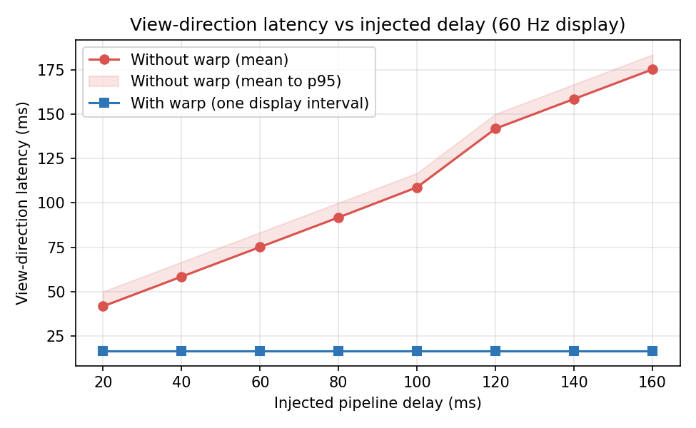
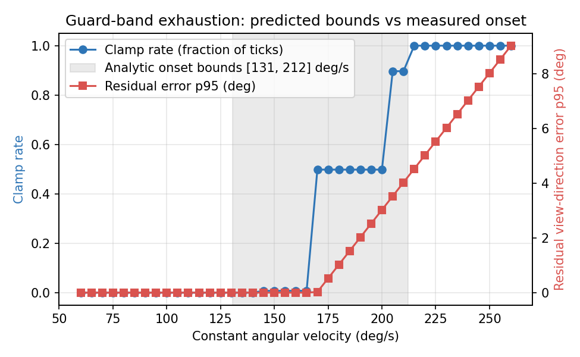
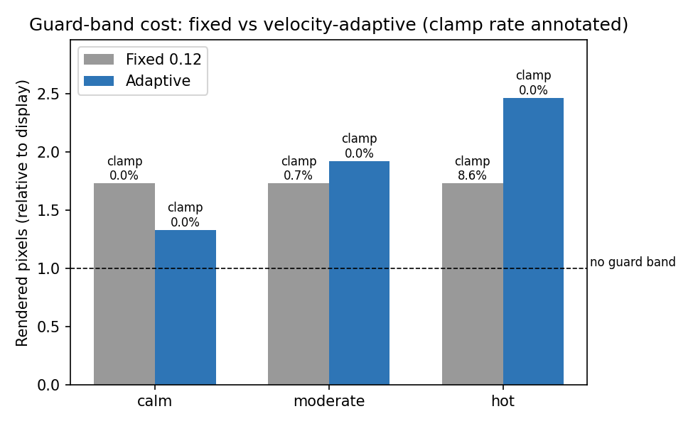

Frame Warp
Client-side frame reprojection for motion-to-photon latency mitigation in browser and cloud-streamed rendering. The latency the network adds does not have to be the latency the player feels.
Your view lags your hand
Motion-to-photon latency is the delay between physical input and the photons that reflect it — the dominant feel-defining property of interactive rendering.
A display refreshes at a fixed rate, but the underlying 3D scene may be redrawn far less often — a demanding game at 30 FPS produces a new frame only every 33 ms — and every stage of a real pipeline (input sampling, simulation, rendering, queueing, and in cloud streaming: encoding, transmission, decoding) holds the user's input a little longer before it becomes visible.
Prior measurement studies place cloud gaming latencies in the 100–300 ms range, with measurable degradation of player performance and quality of experience well below that. For camera control it is directly felt: the view lags the hand.
Two clocks, one warp
Mouse input is available at hundreds of hertz even when frames are not. So run two clocks — and let the fast one steer the slow one's pixels.
The scene is rendered into a texture at its slow native rate. At every display refresh, the latest texture is warped — shifted by the camera rotation that has occurred since the frame was rendered — so the displayed view direction tracks the freshest input even though the pixels are old. The technique descends from post-rendering 3D warping and image-based rendering, reached consumers as VR asynchronous timewarp, and is the substance of NVIDIA's announced Reflex 2 Frame Warp.
The fast clock
Pointer-lock mouse input sampled on every event (125–1000 Hz) maintains the camera yaw and pitch — the freshest pose the system has.
input.jsThe slow clock
The 3D scene renders at a capped 30 FPS into an off-screen texture, deliberately using an orientation from a configurable interval in the past — the always-on simulated condition of a heavy pipeline.
lag.jsThe compositor
Every display refresh, a fullscreen-quad shader draws the newest texture shifted by the angular delta between freshest input and the frame's pose: Δu = −Δyaw/fovx, Δv = Δpitch/fovy.
warp-shader.jsThree artefacts, one compositor
A local demo that makes the problem falsifiable, the same pipeline split across a real network, and a deterministic instrument that turns the claims into automated tests.
1 · The shooting range
A browser demo (Three.js/WebGL) where a 30 FPS, deliberately delayed pipeline is reprojected to display rate. Hit detection is honest: a click fires one ray from the orientation the screen is currently displaying, so the outcome can differ between modes only through the latency the warp removes. Press W and watch tracked shots start to land.
Local · src/2 · The cloud pipeline
A server window streams the rendered scene as WebRTC video with configurable one-way delay and jitter; the player window reprojects the decoded stream using local input. Pose synchronisation is frame-exact: a 16-bit frame identifier is baked into the frame's own pixels, hidden inside the guard-band margin.
Streamed · src/cloud/3 · The replay instrument
Recorded or synthetic input traces re-run through the full pipeline logic headlessly and bit-reproducibly. Same input, different pipeline — every configuration comparison is perfectly controlled, and every figure below is generated from it or from live CSV exports.
Deterministic · src/replay/A shifted image needs pixels beyond its own edge, so the scene renders at a wider field of view than displayed and the shader shows the central crop — the guard band (margin g = 0.12 per side, with the tangent-exact FOV relation tan(Frender/2) = tan(Fdisplay/2)/(1−2g)). Edge clamping remains only as the fallback when motion exhausts the margin — the failure mode the analysis bounds.
Limits stated as precisely as gains
The warp's error model is written down, bounded, and then checked against the instrument — including one bound the instrument corrected.
Jitter immunity
If the required delta is within the guard margin, the displayed view direction equals the input pose sampled at composite time exactly. The frame's age determines only which pose enters the subtraction — the subtraction then cancels it. Perceived rotation latency is independent of both the mean and the variance of frame age.
§4.2Guard-band exhaustion
The largest compensable rotation is Δmax = 16.98° at the default configuration. At constant angular velocity, clamping is predicted to begin between 130.6 and 212.2 deg/s; the simulator measures onset at ≈143 deg/s — inside the band. The display-tick term in the age bound was found by a failing automated test.
§4.3 · Figure 2Linearisation & parallax
The shader's shift is linear in angle while a perspective image is linear in its tangent: brisk tracking at 60 deg/s with a 100 ms-old frame misplaces centre pixels by ≈22 px, converging to zero as rotation stops. Translation parallax is uncompensated and bounded analytically — the motivation for depth-aware reprojection.
§4.4–4.5Measured, not asserted
Every latency number is computed from real timestamps, exported as CSV, and — for the analytic claims — reproduced by automated tests.

| One-way delay | E2E latency, warp off | View latency, warp on |
|---|---|---|
| 40 ms | ~150 ms | ~17 ms |
| 100 ms | ~264 ms | ~17 ms |
| 160 ms | ~381 ms | ~17 ms |
Table 1. Measured cloud-pipeline latency on loopback (CSV export, per-mode means). The pixel frame tag resolved the displayed frame's pose exactly throughout; timestamp matching agreed ~99.5% on a calm network, ~95% under jitter.


| Trace | Policy | Pixel cost (×display) | Clamp rate |
|---|---|---|---|
| calm | fixed 0.12 | 1.73 | 0% |
| calm | adaptive | 1.33 | 0% |
| moderate | fixed 0.12 | 1.73 | 0.7% |
| moderate | adaptive | 1.92 | 0% |
| hot | fixed 0.12 | 1.73 | 8.6% |
| hot | adaptive | 2.47 | 0% |
Table 2. Fixed vs adaptive guard band (replay benchmark). The adaptive policy wins on cost or on quality on every trace, and on both for calm input.
Measurement caveat, stated plainly: the without-warp figure is a directly measured staleness; the with-warp figure is the display-frame interval — a proxy floor that excludes mouse polling, GPU queueing and display scanout, none of which a browser can observe. All comparative claims are between quantities measured the same way.
What does not survive the network
The honest capability table — rotation-only reprojection cannot compensate everything, and the report says exactly what breaks where.
| Capability | Local demo | Cloud demo | Why |
|---|---|---|---|
| Rotation warp | Yes | Yes | Needs only the pose delta |
| Guard band | Yes | Yes | Server renders wide FOV; client crops |
| Motion vectors | Yes | No | YUV 4:2:0 video has no channel for per-pixel velocity |
| De-ghosting clamp | Yes | Inert | With no velocity term the clamp is mathematically a no-op |
Table 3. Honest capability table.
Future work: hardware ground-truth instrumentation, a controlled user study (within-subjects, warp × delay × jitter), depth-aware streamed reprojection that turns the parallax error term into signal, a tangent-exact per-pixel remap, and a WebTransport port as the protocol matures.
A working system and a defensible claim
This project built, measured and analysed a client-side answer to motion-to-photon latency that works at the only place a streaming client can act: the final composite. A video stream that is genuinely hundreds of milliseconds old can be displayed with a view direction one display interval old — flat against network delay and provably indifferent to jitter — using no server modification beyond a wider field of view and an in-band frame tag.
For camera rotation in cloud-streamed rendering, the latency the network adds does not have to be the latency the player feels.
- J. Carmack, "Latency Mitigation Strategies," AltDevBlogADay, 2013.
- J. M. P. van Waveren, "The Asynchronous Time Warp for Virtual Reality on Consumer Hardware," Proc. ACM VRST, 2016.
- W. R. Mark, L. McMillan, and G. Bishop, "Post-Rendering 3D Warping," Proc. I3D, 1997.
- K.-T. Chen et al., "Measuring the Latency of Cloud Gaming Systems," Proc. ACM Multimedia, 2011.
- M. Claypool and K. Claypool, "Latency and Player Actions in Online Games," CACM, 2006.
- T. Kamarainen et al., "A Measurement Study on Achieving Imperceptible Latency in Mobile Cloud Gaming," Proc. ACM MMSys, 2017.
- K. Lee et al., "Outatime: Using Speculation to Enable Low-Latency Continuous Interaction for Mobile Cloud Gaming," Proc. ACM MobiSys, 2015.
- NVIDIA, "Reflex 2 with Frame Warp," announced CES 2025.
- M. Siekkinen and T. Kamarainen, "Streaming Real-Time Rendered Scenes as 3D Gaussians," arXiv:2604.02851, 2026.
The full report contains 28 references; see the PDF for the complete list.